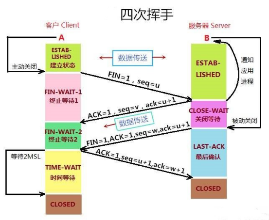
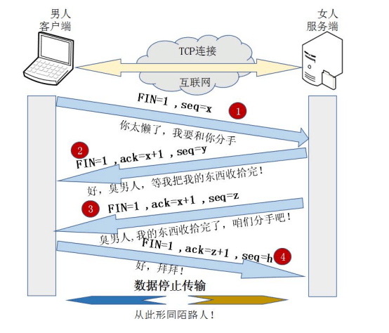
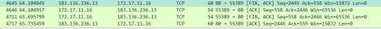

原文连接:https://www.cnblogs.com/AhuntSun-blog/p/12037852.html
上文链接：
四、TCP的四次挥手（Four-Way Wavehand）
0.前言
对于"三次握手"我们耳熟能详，因为其相对的简单。但是，我们却不常听见“四次挥手”，就算听过也未必能详细地说明白它的具体过程。下面就为大家详尽，直观，完整地介绍“四次挥手”的过程。
1.“四次挥手”的详解
所谓的四次挥手即TCP连接的释放(解除)。连接的释放必须是一方主动释放，另一方被动释放。以下为客户端主动发起释放连接的图解：

挥手之前主动释放连接的客户端结束ESTABLISHED阶段。随后开始“四次挥手”：
（1）首先客户端想要释放连接，向服务器端发送一段TCP报文，其中：
标记位为FIN，表示“请求释放连接“；
序号为Seq=U；
随后客户端进入FIN-WAIT-1阶段，即半关闭阶段。并且停止在客户端到服务器端方向上发送数据，但是客户端仍然能接收从服务器端传输过来的数据。
注意：这里不发送的是正常连接时传输的数据(非确认报文)，而不是一切数据，所以客户端仍然能发送ACK确认报文。
（2）服务器端接收到从客户端发出的TCP报文之后，确认了客户端想要释放连接，随后服务器端结束ESTABLISHED阶段，进入CLOSE-WAIT阶段（半关闭状态）并返回一段TCP报文，其中：
标记位为ACK，表示“接收到客户端发送的释放连接的请求”；
序号为Seq=V；
确认号为Ack=U+1，表示是在收到客户端报文的基础上，将其序号Seq值加1作为本段报文确认号Ack的值；
随后服务器端开始准备释放服务器端到客户端方向上的连接。
客户端收到从服务器端发出的TCP报文之后，确认了服务器收到了客户端发出的释放连接请求，随后客户端结束FIN-WAIT-1阶段，进入FIN-WAIT-2阶段
前"两次挥手"既让服务器端知道了客户端想要释放连接，也让客户端知道了服务器端了解了自己想要释放连接的请求。于是，可以确认关闭客户端到服务器端方向上的连接了
（3）服务器端自从发出ACK确认报文之后，经过CLOSED-WAIT阶段，做好了释放服务器端到客户端方向上的连接准备，再次向客户端发出一段TCP报文，其中：
标记位为FIN，ACK，表示“已经准备好释放连接了”。注意：这里的ACK并不是确认收到服务器端报文的确认报文。
序号为Seq=W；
确认号为Ack=U+1；表示是在收到客户端报文的基础上，将其序号Seq值加1作为本段报文确认号Ack的值。
随后服务器端结束CLOSE-WAIT阶段，进入LAST-ACK阶段。并且停止在服务器端到客户端的方向上发送数据，但是服务器端仍然能够接收从客户端传输过来的数据。
（4）客户端收到从服务器端发出的TCP报文，确认了服务器端已做好释放连接的准备，结束FIN-WAIT-2阶段，进入TIME-WAIT阶段，并向服务器端发送一段报文，其中：
标记位为ACK，表示“接收到服务器准备好释放连接的信号”。
序号为Seq=U+1；表示是在收到了服务器端报文的基础上，将其确认号Ack值作为本段报文序号的值。
确认号为Ack=W+1；表示是在收到了服务器端报文的基础上，将其序号Seq值作为本段报文确认号的值。
随后客户端开始在TIME-WAIT阶段等待2MSL
为什么要客户端要等待2MSL呢？见后文。
服务器端收到从客户端发出的TCP报文之后结束LAST-ACK阶段，进入CLOSED阶段。由此正式确认关闭服务器端到客户端方向上的连接。
客户端等待完2MSL之后，结束TIME-WAIT阶段，进入CLOSED阶段，由此完成“四次挥手”。
后“两次挥手”既让客户端知道了服务器端准备好释放连接了，也让服务器端知道了客户端了解了自己准备好释放连接了。于是，可以确认关闭服务器端到客户端方向上的连接了，由此完成“四次挥手”。
与“三次挥手”一样，在客户端与服务器端传输的TCP报文中，双方的确认号Ack和序号Seq的值，都是在彼此Ack和Seq值的基础上进行计算的，这样做保证了TCP报文传输的连贯性，一旦出现某一方发出的TCP报文丢失，便无法继续"挥手"，以此确保了"四次挥手"的顺利完成。
2.”四次挥手“的动态过程
1.png)
3.“四次挥手”的通俗理解

举个栗子：把客户端比作男孩，服务器比作女孩。通过他们的分手来说明“四次挥手”过程。
"第一次挥手"：日久见人心，男孩发现女孩变成了自己讨厌的样子，忍无可忍，于是决定分手，随即写了一封信告诉女孩。
“第二次挥手”：女孩收到信之后，知道了男孩要和自己分手，怒火中烧，心中暗骂：你算什么东西，当初你可不是这个样子的！于是立马给男孩写了一封回信：分手就分手，给我点时间，我要把你的东西整理好，全部还给你！
男孩收到女孩的第一封信之后，明白了女孩知道自己要和她分手。随后等待女孩把自己的东西收拾好。
“第三次挥手”：过了几天，女孩把男孩送的东西都整理好了，于是再次写信给男孩：你的东西我整理好了，快把它们拿走，从此你我恩断义绝！
“第四次挥手”：男孩收到女孩第二封信之后，知道了女孩收拾好东西了，可以正式分手了，于是再次写信告诉女孩：我知道了，这就去拿回来！
这里双方都有各自的坚持。
- 女孩自发出第二封信开始，限定一天内收不到男孩回信，就会再发一封信催促男孩来取东西！
- 男孩自发出第二封信开始，限定两天内没有再次收到女孩的信就认为，女孩收到了自己的第二封信；若两天内再次收到女孩的来信，就认为自己的第二封信女孩没收到，需要再写一封信，再等两天.....
倘若双方信都能正常收到，最少只用四封信就能彻底分手！这就是“四次挥手”。
4.为什么“握手”是三次，“挥手”却要四次？
TCP建立连接时之所以只需要"三次握手"，是因为在第二次"握手"过程中，服务器端发送给客户端的TCP报文是以SYN与ACK作为标志位的。SYN是请求连接标志，表示服务器端同意建立连接；ACK是确认报文，表示告诉客户端，服务器端收到了它的请求报文。
即SYN建立连接报文与ACK确认接收报文是在同一次"握手"当中传输的，所以"三次握手"不多也不少，正好让双方明确彼此信息互通。
TCP释放连接时之所以需要“四次挥手”,是因为FIN释放连接报文与ACK确认接收报文是分别由第二次和第三次"挥手"传输的。为何建立连接时一起传输，释放连接时却要分开传输？
- 建立连接时，被动方服务器端结束CLOSED阶段进入“握手”阶段并不需要任何准备，可以直接返回SYN和ACK报文，开始建立连接。
- 释放连接时，被动方服务器，突然收到主动方客户端释放连接的请求时并不能立即释放连接，因为还有必要的数据需要处理，所以服务器先返回ACK确认收到报文，经过CLOSE-WAIT阶段准备好释放连接之后，才能返回FIN释放连接报文。
所以是“三次握手”，“四次挥手”。
5.为什么客户端在TIME-WAIT阶段要等2MSL?
为的是确认服务器端是否收到客户端发出的ACK确认报文
当客户端发出最后的ACK确认报文时，并不能确定服务器端能够收到该段报文。所以客户端在发送完ACK确认报文之后，会设置一个时长为2MSL的计时器。MSL指的是Maximum Segment Lifetime：一段TCP报文在传输过程中的最大生命周期。2MSL即是服务器端发出为FIN报文和客户端发出的ACK确认报文所能保持有效的最大时长。
服务器端在1MSL内没有收到客户端发出的ACK确认报文，就会再次向客户端发出FIN报文；
- 如果客户端在2MSL内，再次收到了来自服务器端的FIN报文，说明服务器端由于各种原因没有接收到客户端发出的ACK确认报文。客户端再次向服务器端发出ACK确认报文，计时器重置，重新开始2MSL的计时；
- 否则客户端在2MSL内没有再次收到来自服务器端的FIN报文，说明服务器端正常接收了ACK确认报文，客户端可以进入CLOSED阶段，完成“四次挥手”。
所以，客户端要经历时长为2SML的TIME-WAIT阶段；这也是为什么客户端比服务器端晚进入CLOSED阶段的原因
6.抓包验证

图中显示的就是完整的TCP连接释放的”四次挥手”过程。在 80 -> 55389 中，假设80是本地(客户端)端口，55389是服务器端口。80端口与55389之间的四次来回就是"四次挥手"过程。
- ”第一次挥手”客户端发送的FIN请求释放连接报文以[FIN，ACK]作为标志位，其中报文序号Seq=2445；确认号Ack=558；
注意：这里与“第三次握手”的ACK并不是表示确认的ACK报文。
”第二次挥手”服务器端返回的ACK确认报文以[ACK]作为标志位；其中报文序号Seq=558；确认号Ack=2246；
”第三次挥手”服务器端继续返回的FIN同意释放连接报文以[FIN，ACK]作为标志位；其中报文序号Seq=558；确认号Ack=2246；
”第四次挥手”客户端发出的ACK确认接收报文以[ACK]作为标志位；其中报文序号Seq=2446；确认号Ack=559；
后一次“挥手”传输报文中的序号Seq值等于前一次"握手"传输报文中的确认号Ack值；
后一次“挥手”传输报文中的确认号Ack值等于前一次"握手"传输报文中的序号Seq值；
故这是连续的“四次挥手”过程，与前面的分析相符。
参考资料：